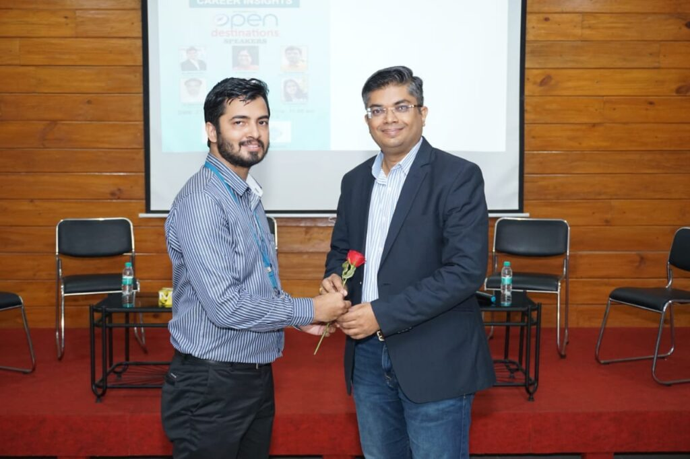
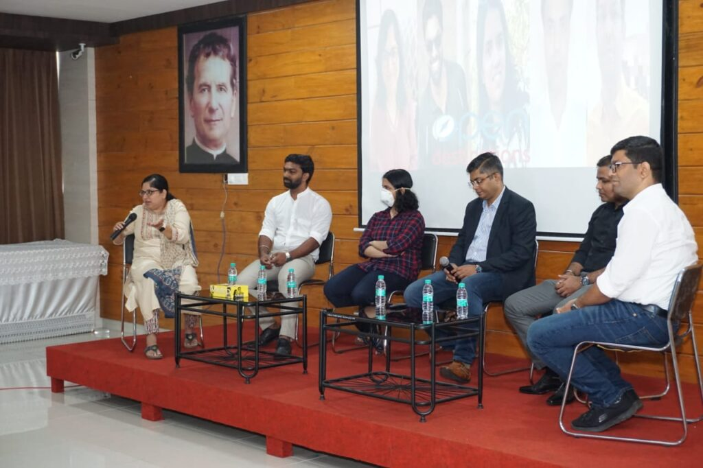
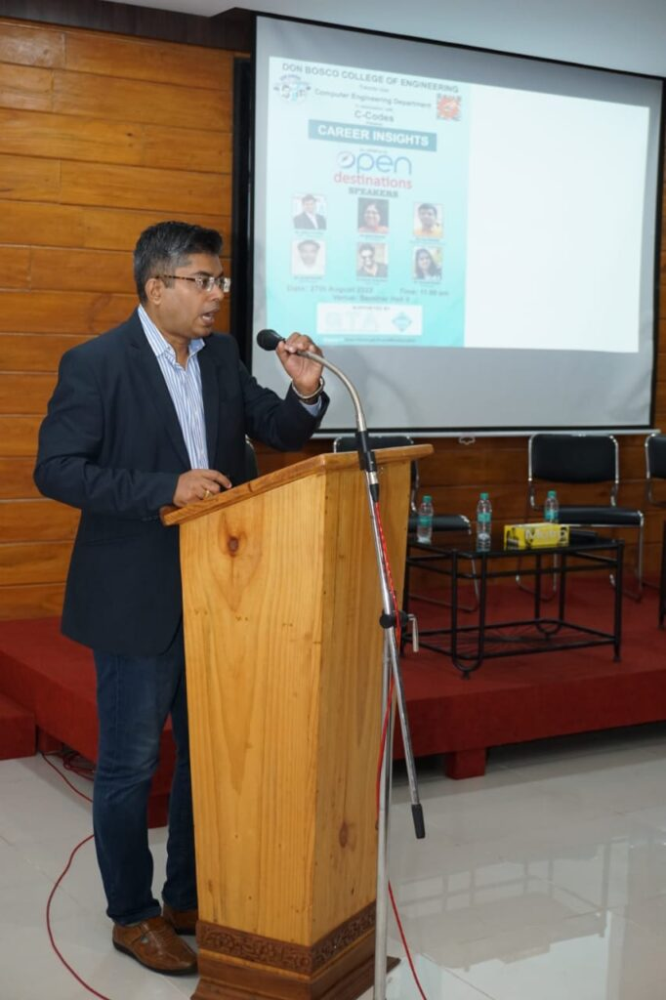

C-codes student association along with ACM Goa students chapter of computer engineering department, DBCE ,Fatorda organized a Panel Discussion on career insights. The talk was conducted on 27 August 2022, for second and third year computer engineering students. The resource people of the workshop were from Open Destination limited (ODL) and they were Mr. Milind Anvekar- SVP operations Customer experience-SaaS , Ms. Rupal Karande- VP Projects Architects , mobile development,project management. Mr. Rupesh Kargaonkar - team lead development (roles), training , Mr. Leon Mesquita- Head of professional services Product management,QA automation and Ms Amrapalli Nayak. The coordinators for the event were Dr. Gaurang Patkar, Prof. Merwyn D'souza, Prof. Amey K. Tilve and Prof. Sweta Rane.

The session commenced by welcoming the dignitaries of the day with the bouquet of flowers.
The speakers shared their journey of how they turned from an engineering student to now leading the company.
Mr.Milind Anvekar started by saying that future of IT industry is bright. He mentioned that there will be 20 times the present demand for digital stalls by 2024.
Ms. Rupal shared with us her journey of being a strong independent women and also told us about the various positions that a CS student can get in the company.

Mr. Leon mentioned that he was very keen in computer science from the beginning and chose to be an engineer inspite of coming from a family of doctors.He said that even if one is not good in programming there are different roles that a person can play in a tech company like being buisness analyst .
Mr. Shakti shared with us his experience in software testing and game testing.
Mr. Rupesh said that he was always interested in programming problem solving and he also trains people so that they ease out in an organization. Ms. Amrapali shared with us the story of how she convinced her parents to drop biology inspite of coming from the family of doctors and how she was always interested in computers.
Ms. Rupal guided us on various positions being offered to the engineering student at the company , such as being project manager, team lead , technical architect, assistant development manager . Finally at the end of the session speakers answered all the questions asked by the students
Mr. Milind at the end said “ Do the job you like to do or like the job you do”.
The session concluded with a vote of thanks given by Prof. Merwyn D’souza. The event was very informative and a great success
